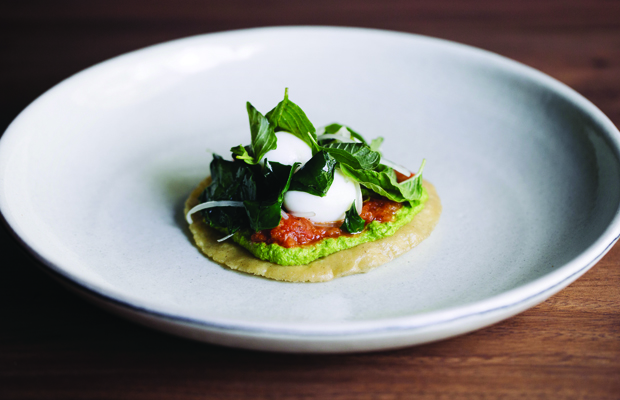

7 restaurantes imperdibles en Oaxaca.
Oaxaca es un paraíso gastronómico. Es rico, diverso, sabroso, y todo se debe a la enorme variedad de climas y culturas que convergen en su territorio. Es tan grande que tiene 570 municipios que se dividen en ocho regiones, cada una con cocinas muy distintas. En algunas predominan los productos del campo, en otras los sabores del mar.
Estas regiones se dividen en la cañada, la costa, el istmo, la mixteca, papaloapan, la sierra sur, la sierra norte y los valles centrales.
La cocina de la capital oaxaqueña pertenece justamente a la región de los valles centrales, la zona de los moles rojo, negro, coloradito y chichilo.
Estos son nuestros sitios consentidos para comer en Oaxaca -desde el mercado 20 de noviembre, hasta los restaurantes de alta cocina- y algunos en la ciudad de México para no extrañar los sabores oaxaqueños.
De Historia Maya y Cenotes
La Riviera Maya se caracteriza por esas aguas azul turquesa, arena fina de color blanco, mar caliente y su clima soleado.
Leer más
Puebla, ciudad patrimonio
La sensación de preparar una maleta después algunas semanas de no hacerlo es ÚNICA, y emocionante. La emoción de saber que vamos a realizar una de las actividades...
Leer más...7 restaurantes imperdibles en Oaxaca.
Oaxaca es un lugar que se caracteriza por su fascinante gastronomía. Existen restaurantes que han encantado...
Leer más...